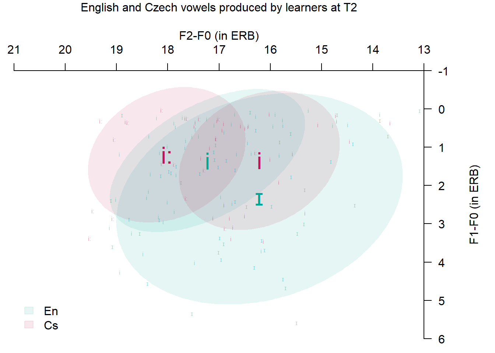

# A tibble: 2 × 2
Input n
<fct> <int>
1 New 268
2 Old 503Bohn, O.-S., & Bundgaard-Nielsen, R. L. (2009). Second language speech learning with diverse inputs.
Bosch, L., & Ramon-Casas, M. (2011). Variability in vowel production by bilingual speakers: Can input properties hinder the early stabilization of contrastive categories?
Llompart, M. (2021). Phonetic categorization ability and vocabulary size contribute to the encoding of difficult second-language phonological contrasts into the lexicon.
Lee and Iverson 2012
Yang & Fox 2017
Kartushina et al. 2016
Lee et al., 1999
How does in-class input influence pre-literate FL learners’ production of L2 and L1 vowels? 1. Are vowels better separated in New words recorded immediately after the lesson? 2. Are /æ/-/ɛ/ (and /i/-/ɪ/) less well differentiated in the learners’ pronunciation of the Old words compared to the New words? 3. Does pronunciation of /i,ɪ,ɛ,æ,ʌ/ in the Old words change in time, are the vowels better separated at T2?
L1 words - 19 mono-, di-, or trisyllabic initially-stressed words with /iː,i,e,a/ in the stressed syllable, 21 fillers with other vowels - obstruent/liquid_obstruent/liquid
# A tibble: 2 × 2
Input n
<fct> <int>
1 New 268
2 Old 503# A tibble: 19 × 1
Word
<chr>
1 back
2 cat
3 hat
4 sad
5 rat
6 happy
7 crab
8 black
9 bed
10 head
11 leg
12 red
13 dress
14 step
15 bread
16 chest
17 sheep
18 fish
19 bus # A tibble: 20 × 1
Word
<chr>
1 bat
2 cap
3 cash
4 stag
5 text
6 vet
7 chef
8 vest
9 beach
10 seat
11 seed
12 beet
13 chips
14 tick
15 dish
16 fist
17 dove
18 hug
19 cut
20 hut Linear mixed model fit by REML. t-tests use Satterthwaite's method [
lmerModLmerTest]
Formula: F1e - F0e ~ Vowel * Time * Input + (1 | Speaker) + (1 | Word)
Data: efl_En
Control: lmerControl(optimizer = "bobyqa")
REML criterion at convergence: 2910.7
Scaled residuals:
Min 1Q Median 3Q Max
-4.2344 -0.5884 0.0313 0.6212 4.6127
Random effects:
Groups Name Variance Std.Dev.
Word (Intercept) 0.007136 0.08447
Speaker (Intercept) 0.547916 0.74021
Residual 2.506805 1.58329
Number of obs: 771, groups: Word, 39; Speaker, 7
Fixed effects:
Estimate Std. Error df t value Pr(>|t|)
(Intercept) 8.17908 0.42215 25.34662 19.375 < 2e-16 ***
Vowelɛ -1.65913 0.42750 65.25649 -3.881 0.000245 ***
Voweli -6.81817 0.42429 70.57411 -16.070 < 2e-16 ***
Vowelɪ -5.83383 0.41642 63.21942 -14.010 < 2e-16 ***
Vowelʌ -0.60507 0.44187 77.53509 -1.369 0.174854
TimeT1 0.18895 0.44501 97.81900 0.425 0.672060
Input2 -0.67679 0.36795 56.71397 -1.839 0.071101 .
Vowelɛ:TimeT1 0.07196 0.63277 64.55410 0.114 0.909812
Voweli:TimeT1 1.25329 0.62458 93.20023 2.007 0.047687 *
Vowelɪ:TimeT1 0.39512 0.62386 82.57810 0.633 0.528257
Vowelʌ:TimeT1 0.65275 0.63346 87.78026 1.030 0.305625
Vowelɛ:Input2 1.33467 0.50248 50.62762 2.656 0.010543 *
Voweli:Input2 0.54214 0.60875 45.82272 0.891 0.377804
Vowelɪ:Input2 0.68234 0.59754 37.39647 1.142 0.260749
Vowelʌ:Input2 0.45141 0.59827 41.91904 0.755 0.454745
TimeT1:Input2 -0.01154 0.50845 140.28707 -0.023 0.981925
Vowelɛ:TimeT1:Input2 -0.09302 0.71815 94.29086 -0.130 0.897221
Voweli:TimeT1:Input2 -0.70617 0.83835 240.29708 -0.842 0.400441
Vowelɪ:TimeT1:Input2 -0.43778 0.81398 201.45291 -0.538 0.591288
Vowelʌ:TimeT1:Input2 0.35259 0.82006 202.79438 0.430 0.667686
---
Signif. codes: 0 '***' 0.001 '**' 0.01 '*' 0.05 '.' 0.1 ' ' 1L2 /ɛ, æ, ʌ/ produced by the learners in Old words. Ellipses include 68% of tokens.
L2 /ɛ, æ, ʌ/ produced by the learners in New words. Ellipses include 68% of tokens.
L2 /i, ɪ/ produced by the learners at Time 1 (blue) and Time 2 (pink) across all words. Ellipses include 68% of tokens.
/i/ raised (-2.638 ERB, p=0.002)
/iː/ raised (-1.897 ERB, p=0.021)
/e/ retracted (-0.918 ERB, p=0.016)
/a/ retracted (-0.238 ERB, p=0.620), but the relative distance between /e/ and /a/ remained similar
Vowels produced in Czech words at T1 (green) and T2 (red). Ellipses use 68% CIs.

How does in-class input influence pre-literate FL learners’ production of L2 and L1 non-back vowels? How does their vowel production from the first seven weeks differ from last seven weeks of the experiment?
lessons: input from SSBE-like speaker
at home: practice of earlier-learnt words with parents assumed to have an /ɛ-æ/ merger
the /i/-/ɪ/ contrast absent from the learners’ L1 dialect
Old words - No evidence of phonological updating in Old words: the improved spectral separation of /ɛ/-/æ/ in the newly-learnt in-class words (caused by raising of /ɛ/), did not generalise to the previously-learnt words
No input effects for /i, ɪ, æ, ʌ/ - pronunciation of words with /i, ɪ, æ, ʌ/ from in-class and home input did not differ - in-class input did not cause change the learners’ production of /æ/ and /ʌ/: /æ/ and /ʌ/: consistent separation in all words throughout the experiment, some overlap - spectral distinction in teacher’s input not substantial enough?
Table 1. Coefficient table for vowel height estimates of the target English vowels produced by the learners at T1 and T2. The reference level for Input is New, for Time it is T2. The intercept is /æ/ in Input New at T2.
| term | estimate | df | p-value |
|---|---|---|---|
| (Intercept) | 8.179 | 25.347 | 0.000 |
| vowel ɛ | -1.659 | 65.256 | 0.000 |
| vowel i | -6.818 | 70.574 | 0.000 |
| vowel ɪ | -5.834 | 63.219 | 0.000 |
| vowel ʌ | -0.605 | 77.535 | 0.175 |
| time T1 | 0.189 | 97.819 | 0.672 |
| input 2 | -0.677 | 56.714 | 0.071 |
| vowel ɛ:time T1 | 0.072 | 64.554 | 0.910 |
| vowel i:time T1 | 1.253 | 93.200 | 0.048 |
| vowel ɪ:time T1 | 0.395 | 82.578 | 0.528 |
| vowel ʌ:time T1 | 0.653 | 87.780 | 0.306 |
| vowel ɛ:input 2 | 1.335 | 50.628 | 0.011 |
| vowel i:input 2 | 0.542 | 45.823 | 0.378 |
| vowel ɪ:input 2 | 0.682 | 37.396 | 0.261 |
| vowel ʌ:input 2 | 0.451 | 41.919 | 0.455 |
| time T1:input 2 | -0.012 | 140.287 | 0.982 |
Table 2. Coefficient table for vowel retraction estimates of the target English vowels produced by the learners at T1 and T2. The reference level for Input is New, for Time it is T2. The intercept is /æ/ in Input: New at T2.
| term | estimate | df | p-value |
|---|---|---|---|
| (Intercept) | 14.582 | 38.384 | 0.000 |
| Vowel ɛ | 0.469 | 30.090 | 0.247 |
| Vowel i | 3.001 | 32.524 | 0.000 |
| Vowel ɪ | 1.807 | 29.140 | 0.000 |
| Vowel ʌ | -1.276 | 34.544 | 0.003 |
| Time T1 | 0.274 | 55.628 | 0.498 |
| Input 2 | 0.098 | 30.010 | 0.776 |
| Vowel ɛ:Time T1 | 0.383 | 37.114 | 0.516 |
| Vowel i:Time T1 | -0.235 | 54.856 | 0.679 |
| Vowel ɪ:Time T1 | 0.182 | 47.835 | 0.750 |
| Vowel ʌ:Time T1 | -0.257 | 49.753 | 0.657 |
| Vowel ɛ:Input 2 | 0.355 | 26.982 | 0.459 |
| Vowel i:Input 2 | -0.642 | 23.020 | 0.278 |
| Vowel ɪ:Input 2 | -0.497 | 19.711 | 0.398 |
| Vowel ʌ:Input 2 | -0.799 | 21.977 | 0.176 |
| Time T1:Input 2 | -0.010 | 79.403 | 0.982 |
Table 3. Coefficient table for Czech vowel height estimates. The intercept is /e/ at T1.
| term | estimate | df | p-value |
|---|---|---|---|
| (Intercept) | 6.963 | 16.796 | 0.000 |
| vowel a | 1.712 | 9.959 | 0.004 |
| vowel i | -3.993 | 10.973 | 0.000 |
| vowel iː | -4.865 | 11.432 | 0.000 |
| time T2 | 1.045 | 12.413 | 0.053 |
| vowel a:time T2 | -1.169 | 9.853 | 0.120 |
| vowel i:time T2 | -2.638 | 11.162 | 0.002 |
| vowel iː:time T2 | -1.897 | 11.479 | 0.021 |
Table 4. Coefficient table for vowel retraction estimates in Czech words. The intercept is /e/ at T1.
| term | estimate | df | p-value |
|---|---|---|---|
| (Intercept) | 15.615 | 16.235 | 0.000 |
| vowel a | -1.642 | 10.550 | 0.000 |
| vowel i | 1.079 | 11.478 | 0.005 |
| vowel iː | 2.401 | 12.044 | 0.000 |
| time T2 | -0.918 | 13.941 | 0.016 |
| vowel a:time T2 | -0.238 | 10.550 | 0.620 |
| vowel i:time T2 | 0.448 | 11.906 | 0.352 |
| vowel iː:time T2 | 0.869 | 12.581 | 0.099 |